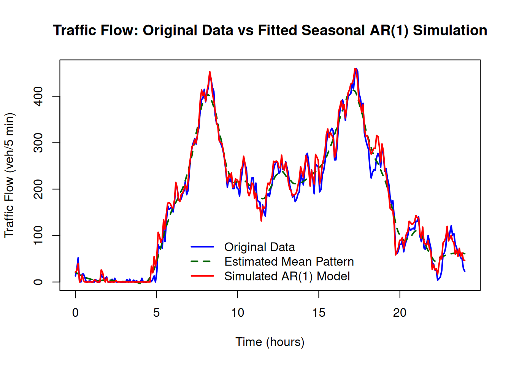
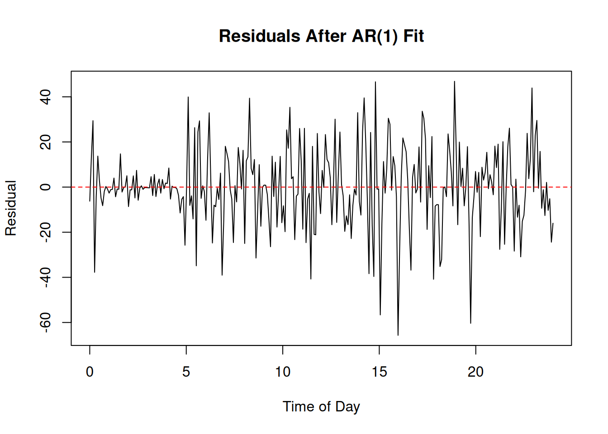
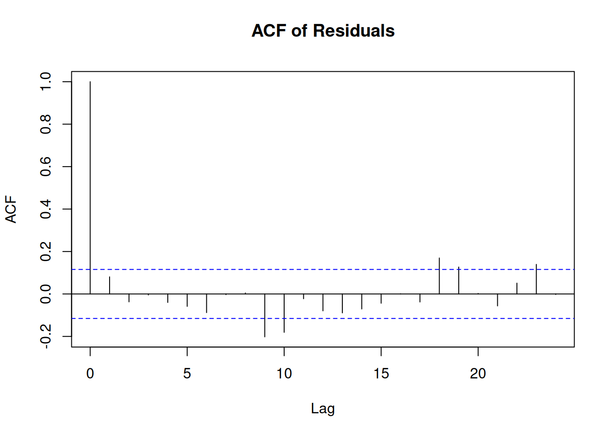

Traffic flow is a natural example of a time series. The number of vehicles passing a road segment changes over time, but these changes are not purely random. Traffic usually follows a predictable daily pattern, with higher flow during peak commuting periods and lower flow outside those periods.
Simulating Traffic Flow with Seasonality and AR(1) Noise
Assume that the observed traffic flow has the following characteristics:
the average flow is around 200 vehicles per 5 minutes during the day,
the average flow is around 20 vehicles per 5 minutes at night,
morning peak occurs between 7–9 am,
evening peak occurs between 4–6 pm,
peak traffic reaches around 400 vehicles per 5 minutes,
traffic flow can never be negative.
A simple zero-mean AR(1) model is not appropriate for raw traffic flow because it does not include the daily traffic cycle. Therefore, we have to separate the process into two parts:
\[
X_t = m_t + Z_t
\]
where:
\(X_t\) is the observed traffic flow at time \(t\),
\(m_t\) is the predictable daily traffic pattern,
\(Z_t\) is a random deviation around that pattern.
The random deviation is modelled using an AR(1) process:
\[
Z_t = \phi Z_{t-1} + \varepsilon_t.
\]
Here, \(\phi\) is the AR(1) coefficient that controls the persistence of congestion, and \(\varepsilon_t\) is a white noise process representing random shocks to traffic flow.
The daily traffic pattern \(m_t\) can be modelled as a combination of a baseline level and two peaks:
where \(s(t)\) is a transition function that smoothly changes from 0 at night to 1 during the day.
During the day, the baseline level is 200 vehicles per 5 minutes. The first peak is centred around 8 am, representing the morning commute. The second peak is centred around 5 pm, representing the evening commute.
In summary, the model parameters for this case study are:
Component
Meaning
\(m_t\)
daily traffic pattern
\(Z_t\)
AR(1) deviation
\(\phi\)
persistence of congestion
\(\varepsilon_t\)
random shocks
\(X_t\)
simulated traffic flow
This shows how time series simulation can combine deterministic patterns and stochastic dynamics to represent realistic systems.
Example 1: Simulating One-day Traffic Flow
Simulate one day of traffic flow with daily seasonality and AR(1) noise. Assume \(\phi = 0.8\) and the standard deviation of the noise \(\sigma = 20\). Plot the simulated traffic flow over a 24-hour period.
import numpy as npimport matplotlib.pyplot as pltnp.random.seed(1234)# time grid (5-minute intervals)n =24*12time = np.linspace(0, 24, n)# smooth day-night transition (sigmoid-based)day_start =6day_end =20s1 =1/ (1+ np.exp(-(time - day_start)))s2 =1/ (1+ np.exp(-(time - day_end)))s = s1 * (1- s2)# baseline: 20 at night → ~200 during daybaseline =20+180* s# peak componentsmorning_peak =200* np.exp(-0.5* ((time -8) /0.8) **2)evening_peak =200* np.exp(-0.5* ((time -17) /0.8) **2)# deterministic patternm = baseline + morning_peak + evening_peak# AR(1) noisephi =0.8sigma =20Z = np.zeros(n)epsilon = np.random.normal(0, sigma, n)for t inrange(1, n): Z[t] = phi * Z[t -1] + epsilon[t]# final traffic flow (ensure non-negative)flow = np.maximum(np.round(m + Z), 0)# plotplt.figure(figsize=(10, 5))plt.plot(time, flow, label="Simulated Traffic Flow")plt.plot(time, m, linestyle="--", linewidth=2, label="Mean Pattern")plt.title("Traffic Flow with Day–Night Pattern and AR(1) Noise")plt.xlabel("Time of Day")plt.ylabel("Vehicles per 5 Minutes")plt.legend()plt.grid(True)plt.show()
The simulated traffic flow has two sources of structure.
First, the deterministic component \(m_t\) creates a realistic daily pattern. Traffic is highest during the morning and evening peak periods, and lower during off-peak periods.
Second, the AR(1) deviation \(Z_t\) creates short-term dependence around the daily pattern. If traffic is unusually high at one time point, it tends to remain somewhat high at the next time point. This reflects persistence in congestion.
Thus, the model captures both:
predictable daily seasonality,
random short-term fluctuations with memory.
Example 2: Simulating Traffic Flow with Accident Shock
Continue from Example 1, but now include a traffic accident that occurs at 3 pm, causing a temporary disruption in traffic flow. Assume the accident causes an additional 120 vehicles per 5 minutes at its peak, and the effect lasts for about 30 minutes. Simulate the traffic flow with this shock and plot the results.
To add the accident shock inside the AR(1), we use the following recursion:
import numpy as npimport matplotlib.pyplot as pltnp.random.seed(1234)# time grid: 5-minute intervals over one dayn =24*12time = np.linspace(0, 24, n)# day-night baselineday_start =6day_end =20s1 =1/ (1+ np.exp(-(time - day_start)))s2 =1/ (1+ np.exp(-(time - day_end)))s = s1 * (1- s2)baseline =20+180* s# morning and evening peaksmorning_peak =200* np.exp(-0.5* ((time -8) /0.8) **2)evening_peak =200* np.exp(-0.5* ((time -17) /0.8) **2)m = baseline + morning_peak + evening_peak# AR(1) noisephi =0.8sigma =20Z = np.zeros(n)epsilon = np.random.normal(0, sigma, n)# accident shockaccident_time =15# 3 pmaccident_size =120# extra vehicles/minute effectaccident_width =0.5# duration/spread in hoursaccident_shock = accident_size * np.exp(-0.5* ((time - accident_time) / accident_width) **2)for t inrange(1, n): Z[t] = phi * Z[t -1] + epsilon[t] + accident_shock[t]flow = np.maximum(m + Z, 0)plt.figure(figsize=(10, 5))plt.plot(time, flow, label="Simulated traffic flow")plt.plot(time, m, linestyle="--", linewidth=2, label="Daily mean pattern")plt.axvline(accident_time, linestyle=":", linewidth=2, label="Accident time")plt.title("Traffic Flow with Daily Pattern, AR(1) Noise, and Accident Shock")plt.xlabel("Time of Day")plt.ylabel("Vehicles per 5 Minutes")plt.legend()plt.grid(True)plt.show()
When introducing the accident shock, we see a noticeable spike in traffic flow around 3 pm. The AR(1) structure causes this shock to persist for a while, creating a temporary disruption in the traffic pattern. This illustrates how external events can cause deviations from the expected daily pattern, and how the AR(1) model captures the persistence of such shocks in traffic flow.
Optional Extension: Fitting an AR(1) Model to Traffic Data
Given a one-day traffic flow dataset tf_data.csv, we can fit an AR(1) model to the data to estimate the parameters \(\phi\) and \(\sigma\). We can then plot the fitted AR(1) process along with the original data to assess the fit.
Since the observed traffic flow includes a strong daily pattern, we first need to estimate and remove this deterministic component before fitting the AR(1) model to the residuals. After fitting the AR(1) model, we can simulate the fitted process and add back the estimated daily pattern to compare with the original data.
Steps:
Load the traffic flow data from tf_data.csv.
Estimate the daily pattern using a moving average or smoothing method.
Calculate the residuals by subtracting the estimated daily pattern from the observed traffic flow.
Fit an AR(1) model to the residuals to estimate \(\phi\) and \(\sigma\).
Simulate the fitted AR(1) process and add back the estimated daily pattern.
Plot the original data, the estimated daily pattern, and the fitted AR(1) simulation for comparison.
library(forecast)# Load datadf <-read.csv("tf_data.csv")# Estimate daily pattern using loess smoothingloess_fit <-loess( traffic_flow ~ time,data = df,span =0.15)m_hat <-predict(loess_fit, newdata = df)# Residual process: observed flow minus estimated mean patternZ_obs <- df$traffic_flow - m_hat# Remove missing values caused by moving average smoothingvalid_idx <-which(!is.na(Z_obs))Z_fit <- Z_obs[valid_idx]# Fit AR(1) model to residualsar_model <-Arima(Z_fit, order =c(1, 0, 0), include.mean =FALSE)phi_est <- ar_model$coef["ar1"]sigma_est <-sqrt(ar_model$sigma2)cat("Estimated AR(1) coefficient (phi):", round(phi_est, 3), "\n")
Estimated AR(1) coefficient (phi): 0.666
cat("Estimated noise standard deviation (sigma):", round(sigma_est, 3))
Estimated noise standard deviation (sigma): 17.563
# Simulate fitted AR(1) residual processset.seed(1234)n <-nrow(df)Z_sim <-numeric(n)epsilon <-rnorm(n, mean =0, sd = sigma_est)for (t in2:n) { Z_sim[t] <- phi_est * Z_sim[t -1] + epsilon[t]}# Add simulated residuals back to deterministic patternfitted_flow <- m_hat + Z_sim# Traffic flow cannot be negativefitted_flow <-pmax(fitted_flow, 0)# Plot original data and simulated fitted modelplot( df$time, df$traffic_flow,type ="l",col ="blue",lwd =2,xlab ="Time (hours)",ylab ="Traffic Flow (veh/5 min)",main ="Traffic Flow: Original Data vs Fitted Seasonal AR(1) Simulation")lines(df$time, m_hat, col ="darkgreen", lwd =2, lty =2)lines(df$time, fitted_flow, col ="red", lwd =2)legend("bottom",legend =c("Original Data", "Estimated Mean Pattern", "Simulated AR(1) Model"),col =c("blue", "darkgreen", "red"),lty =c(1, 2, 1),lwd =2,bty ="n")

The plot compares the original traffic flow data (blue), the estimated daily pattern (green dashed), and the simulated AR(1) model (red). A good model should reproduce similar variability and dependence patterns, rather than match the original data point-by-point.
ar_model
Series: Z_fit
ARIMA(1,0,0) with zero mean
Coefficients:
ar1
0.6664
s.e. 0.0440
sigma^2 = 308.5: log likelihood = -1233.8
AIC=2471.6 AICc=2471.65 BIC=2478.93
Interpretation of the model summary:
\(\phi =\) 0.666 : This indicates moderate persistence in traffic flow. About 66.6% of a deviation persists to the next time point, suggesting that if traffic is unusually high at one time, it tends to remain somewhat high at the next time point.
\(\rho_k = 0.666^k\): The autocorrelation function (ACF) of the residuals will show a geometric decay pattern, with the first lag having the highest correlation and subsequent lags decreasing exponentially. A traffic shock will lose most of its influence after a few time points, but there is still some memory in the system.
standard error = 0.044: This indicates the uncertainty in the estimate of \(\phi\). Therefore, a 95% confidence interval for \(\phi\) would be approximately \(0.666 \pm 1.96 \times 0.044 = [0.58, 0.753]\), confirming that there is significant persistence in the traffic flow.
\(\sigma^2 = 308.5\): This indicates the variance of the shocks and suggests that the random fluctuations are about \(\sigma = \sqrt{308.5} \approx \pm 17.56\) veh/5 min.
The AIC and BIC are used to compare this model with other potential models (e.g., AR(2), ARMA) to determine the best fit for the data.
We can plot the residuals and their ACF to check if the AR(1) model has adequately captured the temporal dependence.
res <-residuals(ar_model)plot( time <-seq(0, 24, length.out =length(res)), res,type ="l",main ="Residuals After AR(1) Fit",xlab ="Time of Day",ylab ="Residual")abline(h =0, col ="red", lty =2)

acf(res, main ="ACF of Residuals")

If the AR(1) model is appropriate, the residuals should resemble white noise, and the ACF should show no significant autocorrelations at lags greater than 0. From the plot, the residuals appear to fluctuate around zero, which is fine. However, the variance of the residuals seems to be higher during the day, suggesting that the AR(1) model may not fully capture the heteroscedasticity (changing variance over time) in the data. Therefore,
AR(1) is good for mean dynamics but not capturing variance dynamics. A more complex model may be needed to capture the changing variance in traffic flow throughout the day.
From the ACF plot, almost all autocorrelations are within the 95% confidence bounds, indicating that there is no significant remaining dependence in the residuals. This suggests that the AR(1) model has successfully captured the temporal dependence in the traffic flow data.
Conclusion: The model successfully captures temporal dependence, but not time-varying variability.